JAMK, Digile N4S
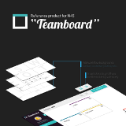
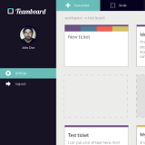
Digile N4S is a research program funded by TEKES and we are representing JAMK University of Applied Sciences on the program.
I’m currently working as a product owner and project manager for our reference product called Teamboard. Teamboard is an open source realtime collaboration tool for teams. It can be used to add agile methodologies in the workflow for example using it as a kanban board.
You can try the demo version of the Teamboard here or you can also check our wiki on the Github.
See what else we have done from our website n4sjamk.github.io or on our github page
I have learned a lot about project management, lean and agile workflows and frameworks, software-as-a-service development, feedback channels etc. I also did some web development, for example our webiste
JAMK, Unity

I was a guest lecturer at JAMK University of applied sciences in two courses. The first course was a part of the Game Programming module and the second course was a course funded by the ELY for adult studends.
I taught the basics of Unity: interface, GameObjects and Assets, scripting, physics and rendering. I also guided the groups with their game project through the course.
While I was teaching the course, I wrote my bachelor’s thesis for JAMK about the subject. You can find the thesis from here: Teaching Unity3D in Game Programming Module
Mediataivas
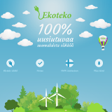
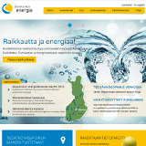
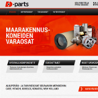
I was working at Mediataivas as a web developer for a summer. My main task was to create working and responsive themes based on a design and afetrwards putting them on a cms. I learned a lot of new web development techniques and tools.
Few things I learned: css-precompressors (less particulary), Concrete5 content management system and Twitter Bootstrap framework.
NHTV Breda, Z-Gee game project
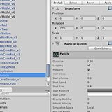
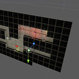
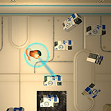
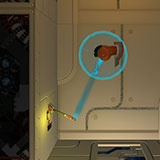
I had my exchange study period in Netherlands @ NHTV International Game Architecture & Design. I studied with first year Indie Game Design class, and we had this Game Lab course which was basically a big game project. We had a team of 8 people and my main responsibility was the level design. The game is made with Unity3D game engine.
The game itself was a pseudo-3D zero gravity space adventure. You are a lonely drone sent to clean up a mess in a forgotten space station, where you are supposed to collect debris, solve physic-based puzzles and avoid danger. The biggest mechanic was the tractor beam, which let you to pull of push objects.
I learned a lot about Unity, SVN and working internationally.
FreeNest
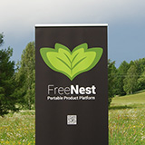
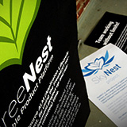
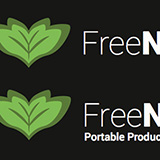
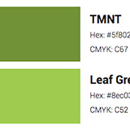
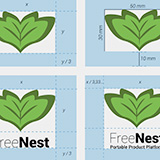
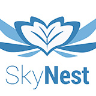
FreeNest is a cloud based open source communal software development platform which includes the most needed tools to communicate, develop and test your projects. Freenest.org
I was a Junior member of User Experience team, and our main goal was to rebrand the whole product. My main task was to design the new brand and to update the themes of various tools in FreeNest. I also made some promo material, for example: posters, rollup, business cards, coasters etc. I learned some new web development technologies and more about git and scrum.
You can download the new FreeNest brandbook here.
{kind=link}
{kind=link}
{kind=link}
{kind=link}
{kind=link}
{kind=link}
{kind=link}
{kind=link}
{kind=link}
{kind=link}
{kind=link}
{kind=link}